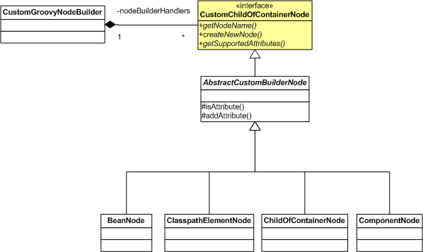

This package contains default builder nodes for NanoContainer Groovy script assembly. Each class represents one type of node that will be handled.
The following diagram shows the typical relations in the builder nodes.

In other words:
- GroovyNodeBuilder contains a Map of CustomGroovyNodes that are keyed by CustomGroovyNode.getNodeName(). It uses this map to locate handlers whenever a groovy script node is encountered.
- For each GroovyScriptNode encountered, an attempt to match on a handler is performed. If one is found, then it calls CustomGroovyNode.createNewNode().
- Most (if not all) of the groovy nodes derive from the AbstractCustomBuilderNode that provides services such as attribute placeholding, and default implementation of getNodeName().